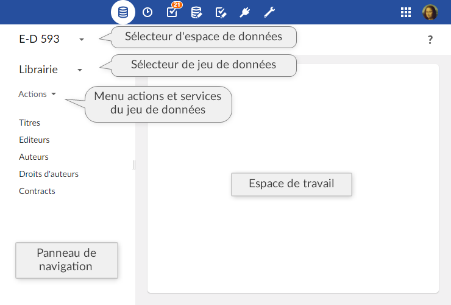

Introduction aux jeux de données
Présentation
Fonction d'un jeu de données
Un jeu de données est un conteneur de données qui se base sur les définitions de structure fournies par le modèle de données qu'il implémente. Lors de la publication d'un modèle de données, il est possible de créer des jeux de données basés sur sa définition. Par la suite, si ce modèle est modifié et republié, tous ses jeux de données associés sont mis à jour automatiquement.
Dans un jeu de données, les valeurs de données sont consultables et modifiables. A l'aide des vues, il est possible d'afficher les tables d'une manière adaptée à la nature des données et du mode d'accès. Les recherches et les filtres peuvent aussi être utilisés pour restreindre l'affichage ou rechercher des données.
Des permissions peuvent aussi être affectées à différents rôles pour contrôler l'accès au niveau du jeu de données. Ainsi, en appliquant des permissions spécifiques, on peut permettre à certains utilisateurs d'afficher ou de modifier des données tout en les cachant à d'autres.
Concepts de base liés aux jeux de données
La compréhension des termes suivants est recommandée pour utiliser les jeux de données :
Utilisation de l'interface utilisateur de la section Données
Dans le cadre de l'utilisation de la Perspective avancée, ou d'une perspective spécifique, les jeux de données sont créés, consultés et modifiés dans la section 'Données'. Seuls les utilisateurs autorisés peuvent accéder à ces interfaces spécifiques.

Pour sélectionner ou créer un jeu de données, cliquer sur 'Sélectionner le jeu de données' dans le panneau de navigation. La structure de données du jeu de données s'affichera dans le panneau de navigation et les formulaires d'enregistrement ainsi que les vues de table s'afficheront dans l'espace de travail.
Lors de la visualisation d'une table du jeu de données dans l'espace de travail, le bouton  permet d'afficher les recherches et filtres disponibles pour restreindre l'affichage des enregistrements.
permet d'afficher les recherches et filtres disponibles pour restreindre l'affichage des enregistrements.
Les actions applicables au jeu de données sont disponibles dans le menu Actions du panneau de navigation (les services sont accessibles en bas de la liste).
Voir aussi
Concepts apparentés
Sommaire du guide utilisateur